Ayam potong 14 sesuai untuk masakan harian keluarga saiz sederhana, saiznya tidak terlalu kecil dan amat sesuai untuk hidangan nasi berlauk. Berikut adalah 7 langkah untuk potong ayam kepada 14 bahagian dengan cepat, mudah dan selamat.
SEBELUM MULA:
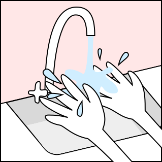
Basuh tangan dan pastikan alatan bersih.
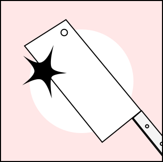
Pastikan pisau diasah tajam.
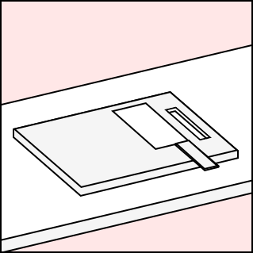
Pastikan papan pemotong dipermukaan rata dan tak bergerak.
LANGKAH-LANGKAH:
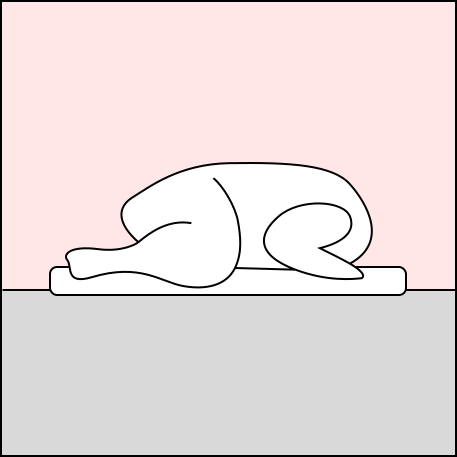
1
Letakkan ayam secara dada dibawah dan tulang belakangnya diatas.
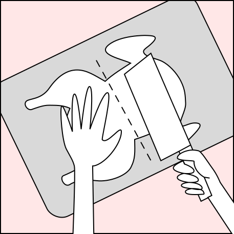
2
Potong tulang belakang ayam tepat di tengah secara melintang.
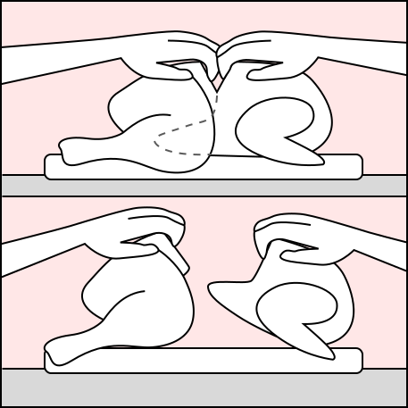
3
Tarik kedua-dua bahagian dan koyakkan sehingga terputus.
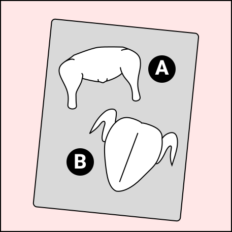
Sekarang, anda ada dua bahagian ayam.
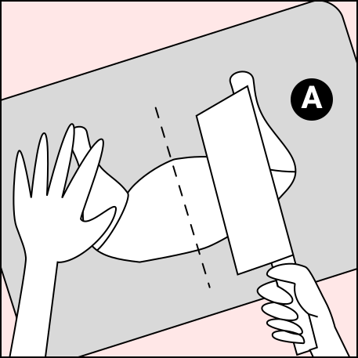
4
Untuk A, letakkan bahagian kulit dibawah, dan mula potong di bahagian tulang belakang secara menegak.
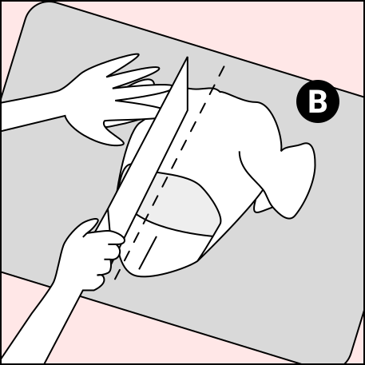
5
Untuk B, letakkan bahagian dada di bawah, potong di tengah. Dari tulang belakang, sampai ke bawah.
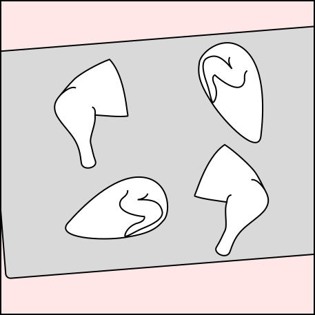
Sekarang, anda ada 4 bahagian ayam.
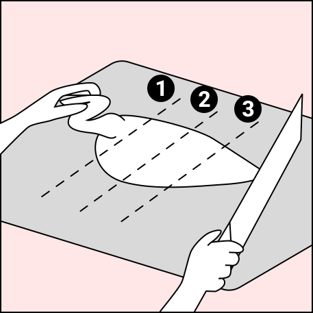
6
Untuk bahagian dada+kepak, tarik dan pegang kepak sebelah tangan, dan potong bahagian dada kepada 3 bahagian.
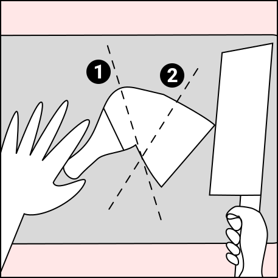
7
Untuk bahagian whole leg, letakkan bahagian berkulit dibawah dan bahagian bertulang diatas, potong satu kali di garisan lemak, dan satu lagi di tengah bahagian thigh.
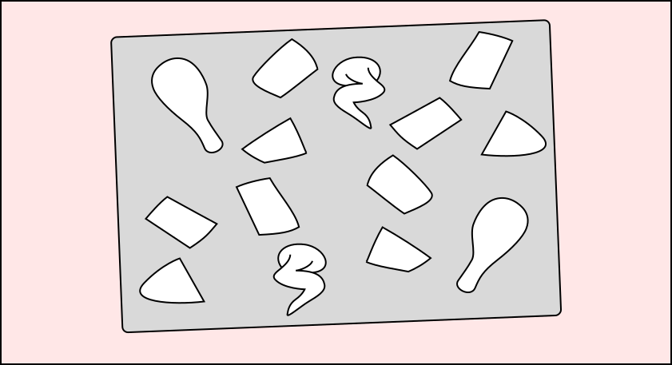
Siap! Tahniah! Anda berjaya memotong ayam kepada 14 bahagian!
Kalau anda dapat sebarang manfaat, sila kongsikan ke media sosial dengan tekan butang dibawah: